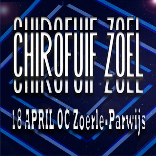
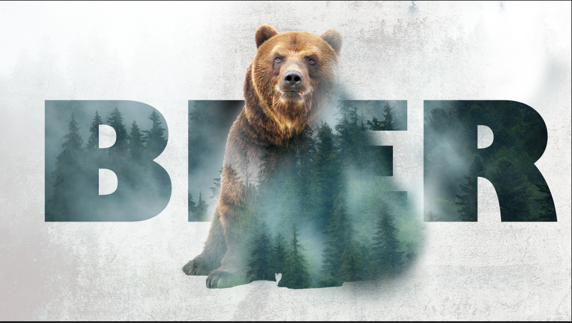
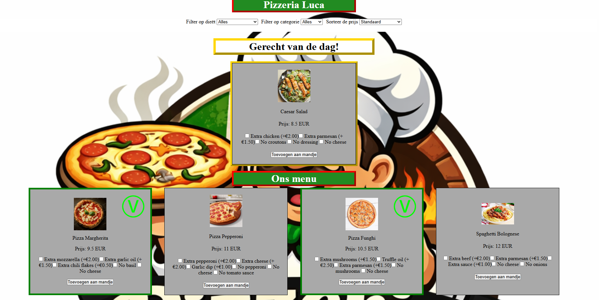

Chirofuif
Ik ben hoofdleider bij de Chiro van Zoerle-Parwijs. Wij doen jaarlijks een fuif en dit jaar ben ik bezig met de reclame te maken voor de sociale media.

Beer
Dit is een afbeelding dat we bewerkt en gemaakt hebben tijdens de les Photoshop. Ik vond dit een heel tof project om mee bezig te zijn omdat ik het eindresultaat zeer mooi vindt en de werkwijze me ook lag.

PE Scripting
Dit is een screenshot van de website die we moesten maken voor het vak Scripting. Ik heb dit toegevoegd omdat het de eerste website is die ik zelf gemaakt heb.
Het ziet er nog niet zeer goed of professioneel uit, maar ik ben er wel trots op omdat het mijn eerste site is.